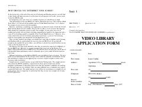

CPIELTS imtihoniga tayyorgarlik ko'rish uchun mo'ljallangan rasmiy amaliy testlar to'plami.
Ushbu kitob ingliz tilini chet tili sifatida o'rganuvchilar uchun IELTS imtihoniga tayyorgarlik ko'rish maqsadida tuzilgan amaliy testlar to'plamini o'z ichiga oladi. Nashr tinglab tushunish, o'qish, yozish va so'zlashuv ko'nikmalarini sinovdan o'tkazish uchun mo'ljallangan imtihon namunaviy savollaridan iborat. Kitob talabalar va o'qituvchilarga imtihon formatini o'rganish va o'z bilimlarini baholash imkonini beradi.